Welcome to a (more or less) thorough walkthrough of R in applied areas. Covers the sections: General Structure, Data import, Simple Data checking, Data Wrangling, Plotting, and advanced R methods. If you want to read it in darkmode there is a button-thing in the top right corner (multi-language support is coming… maybe).
When it comes to utilizing this document, I want to emphasize the fact that the document is intended to give you the tools to independently solve problems, and to troubleshoot potential problems. While generative AI is currently doing quite well in helping amateur coders like us be proficient in programming for social data science, using such services often depend on you understanding the nature of the problem. For that reason, familiarity with the basic construction of the language, enables you to do troubleshooting to figure out where your code has gone wrong in the first place. I also believe that having familiarity with the language, allows you to understand any suggested code that may be thrown at you by a generative AI model better, and you will be better at utilizing this to expand your own knowledge.
Before we dive deeper into explaining the elements of R as a programming language, we can start by having a brief discussion about what R is and how you as a student/data scientist/whatever you are will interact with this programming language. The remaining text will be narrowly focused on code as is, but in this section, I would like to talk a bit about how you will experience using the software.
1.1 What is R?
R is a programming language dedicated to statistical analysis. A simple review of the wikipedia page for programming languages by type, tells us that R is an array, interpreted, impure, interactive mode, list-based, object-oriented prototype-based, and scripting language. As it is a programming language, there are few things that you cannot do through R with your computer. Later on, when we are writing code itself, you will see that programming involves managing elements in your memory (objects or functions) and interacting them with eachother to produce an output from your code. The code itself is written in plain text, and can technically be written with something as simple as a notepad, but using a dedicated environment will allow many advantages, such as typing completion, dedicated graph viewer windows, and a window for all the objects in your environment (but this is getting ahead of ourselves).
In the definition of R as a programming language, I mentioned that it is interactive. This means that you are able to execute parts of the code in whatever sequence you want, and you are able to individually send certain lines of code to the REPL (the console as we will call it), and get the results of that code immediately. This is different from certain other programming languages, which require you to run the entire code each time you wish to see elements of it.
1.2 Who uses R, and why?
R is one of two primary programming languages used by professional data scientists, alongside Python (and to a lesser extent Julia, but we are not that concerned with computational time). Whereas Python has advantages over R in terms of applied computational time, and integration with certain machine learning models, R is by most considered to be easier to learn, as well as having more reliable and accessible tools for data-wrangling, plotting, and statistical modelling (it also doesn’t use significant whitespace, which is the devil’s work). Additionally, there is a rich eco-system of well-integrated package libraries that allow for new tools to be added to your R environment. In this tutorial for instance, we will utilize the tidyverse family of packages, which provide a long list of helpful functions that all work well with each other. R also has integration with advanced statistical models such as structural topic models through stm, and Bayesian data analysis through rstan.
As previously mentioned, R is a programming language, and can therefore do almost everything you could want from a computer (as long as you can code it). In my own experience from knowledge of working life, both Statistics Norway, and the office of the auditor general (Riksrevisjonen) in Norway, primarily rely on R for their work. Additionally, I know of a couple of credit analysis firms that do contract work for banks, that utilize R primarily. The program is used heavily in statistical analysis across sectors, is my main point here.
1.3 Installing R
The first thing you need to do when starting to program in R, is to download R itself. Currently, the latest version of R is 4.4.1 (August 10th, 2024), and you can get a version by retrieving it from a distributor from a CRAN mirror here: https://cran.r-project.org/mirrors.html I select the version from Norway, and just follow the link for “download R for windows”. R is totally free and open source, and you do not need a license or anything of the sort to use it.
1.4 Code Editor (Rstudio, if we are being honest)
Once you have R on your computer, you will need a way to edit scripts so that you can work with the language more easily. In programming this is usually done through an Integrated Developer Environment (IDE), a program which has dedicated elements that allow you to write code better. For R, the preferred IDE is RStudio, which is run by Posit, a foundation that is responsible for many of the quality of life extension to the R language that has come about in the past decade, such as the tidyverse ecosystem. You can download RStudio from posit’s homepage at: https://posit.co/download/rstudio-desktop/.
When you open RStudio, it might at first seem a bit overwhelming, so let’s take the time to explain what the layout of RStudio is like, and how you can use elements of it to your benefit. When opening RStudio for the first time, it will look like this:
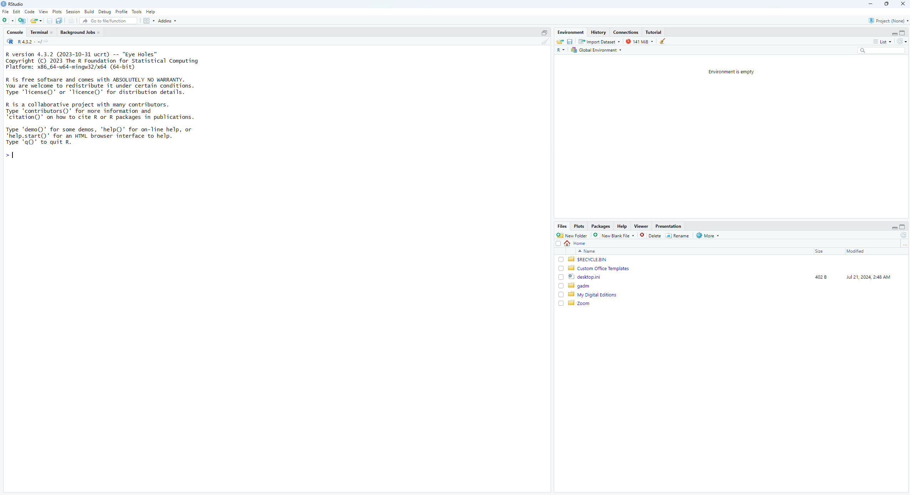
Default Rstudio appearance
If you are uncomfortable with a light editor, you can also change to dark mode by opening the tools header on the top of your editor, then clicking global options, then find the appearance tab to select a new theme for RStudio. In the image, we see three essential windows currently open, normally you will have four of these windows, but we will get to the script window later. The first window we will discuss is the console window, in the image it takes up half the screen. This is where the direct output of many of your functions will be printed, the console is the actual interpreter of all code that you feed into it, and by default it will print out the results of such code. You can also type in code directly into that console, try typing in 1 + 1 in your own console if you are following along. When we write scripts and execute sections of the script, what we are actually doing is sending the code we write to the console. A script is just a way of saving the information for future use and replication.
On your right then, we will see there are two windows. The top window, is by default your environment, you will primarily use this window to keep track of objects in your environment, such as datasets, functions, lists, etc. The environment does also have extensions for browsing functions imported by other packages, but for the most basic of usecases, you will only need to have the global environment displayed in this window. You may also notice there are several other panes in this window, such as history and connections, these will most likely not be relevant for you. In the window below this, you will find the window for files, plots, packages, help and viewer. This window you will more likely change between different panes. Files provide you with easy access to your files, and is basicly another file explorer, that you can also load datasets through, and otherwise more easily interact with elements of your project with. The plots pane will be where your plots appear when you start to make them, through it you can also save such plots, if you prefer doing it that way, rather than through code. The packages pane will be where you can check what packages you have installed, what versions they are, and update them if they are out of date. The help pane will be where the documentation for functions will appear, so that you can read about how to use certain functions. The viewer pane is for certain html elements that will be produced by some code outputs, such as the modelsummary package for making regression tables.
The final window that should be in your RStudio is that for your script editing itself. To open up a new script, note the small icon of a paper sheet with a pluss sign attached to it, below the “file” and “edit” pane in the top left of your editor. Click this, and select R-script, or alternatively just press ctrl+shift+n, to create a new script. This will open an empty text file, in which you can start typing out your R-script. When you type out a line in an R-script, you will notice that the IDE will autocomplete the text you are writing, if there is an existing object or a function that follows. When you write anything in a script, you can place your cursor on the line that you are working with, or highlight what you want to run, and press ctrl+enter to send that line of code to the console, and execute it. Try typing 1+1 in your script window, then sending it to the console for execution.
2 General structure
2.1 Data Types
Information takes several forms in R, all attached with a class, the basic forms of data that needs to be known are numeric (will appear as “double” sometimes, this is related to memory allocation, but just means more decimals numeric), integer (whole numbers), complex (complex numbers, such as 2i), factor (text but with numbers assigned to certain values, this is created using a function), character, boolean (logical, true or false), and several types of Date data. Additionally there are a class of missing values, but they are all covered by NA.
1+1### Comments are in hashtags
[1] 2
"hello"## Strings or characters
[1] "hello"
2i ## Complex
[1] 0+2i
NA
[1] NA
## NA can also have type specific values, but these are *never* usedNA_character_
[1] NA
NA_complex_## All yield same output
[1] NA
## Boolean datasTRUE
[1] TRUE
FALSE
[1] FALSE
All entries in a script (which is just a text file), are sent to the console which interprets the text. There are also certain special datatypes, such as NULL for empty (which is not the same as missing), Inf for infinite values (dividing by zero for instance), and NaN (Not a Number, errors in certain computational processes)
2.2 Assignment
While strictly speaking a functional programming language, object oriented programming is highly supported, and the norm for usage amongst data scientists. Most outputs in the language will be assigned a name, and appear in the global environment (in one of the other windows in your RStudio IDE). This is done either with a = or (more commonly, due to specific interactions with an equals sign) with the <- known as the assignment operator.
hello <-23hello ## Calling the object prints the content by default
[1] 23
There also exists a <<- assignment operator, which can assign objects on a global scope within function environments, but this word salad is too advanced for this simple tutorial.
2.2.1 Other operators
Other operators become important when discussing logical tests or other mathematical operations.
+, -, /, *, ^ all does what you would expect
== Strict logical test, is this equal to the other thing, response in boolean
!= Strict anti-logical test, is this thing different to the other thing, response in boolean
<, >, <=, >=, less than, larger than, less or equal than, larger or equal than, logical tests, returns boolean
&, |, Binding operators for more logical tests & (AND operator) requires both elements to be true, while | (OR operator) requires only one to be true
%in% Contained logical test, is there a unit in this other element which is strictly equal to the first thing.
! in general reverses the proceeding logical test, so if you write !("YES" == "YES") it will ask if the thing inside the parenthesis is not the case, reversing the logical test.
:, integer operator, creates a vector of elements between the starting points. 1:7 will create a vector of whole numbers from 1 to and including 7
%%, modulus operator, divides number preceeding it by number following it, and returns the remainder, so 12 %% 5 will return 2, since 5*2 = 10, with 2 as the remainder.
"Yes"=="Yes"
[1] TRUE
"Yes"=="No"
[1] FALSE
"Yes"!="Yes"
[1] FALSE
"Yes"!="No"
[1] TRUE
"Yes"%in%c("No", "no", "Maybe", "Yes")
[1] TRUE
### R is also what is called "loosely" typed, so this works3=="3"## Equal even tho they are different types of data
[1] TRUE
Logical tests are also relevant through certain functions, these functions all return either TRUE or FALSE values, which is useful in several cases, inside other functions or for flow control in loops (all of this is covered later). These functions include is.na, is.empty, is.character, is.numeric, etc. Lots of functions to explore that start with is.
2.3 Vectors
All complex data of interest to us in R is either a vector, a list or a dataframe (Matrix and Arrays exist, but are not relevant to this scope). Vectors are uni-dimensional with strict same type requirement, dataframes are two-dimensional, and lists are uni-dimensionals with no requirement for consistency among entries. Vectors are created manually using the c function, as seen below, which simply creates an object of type vector, containing the elements within the parenthesis. Some functions will also output vectors, which can then be assigned to variables, or to standalone vectors.
# Vectora_vector <-c(1, 3, 5, 6, 7,1)
All dimensional datatypes can be indexed using brackets, to call individual elements of the object
a_vector[4] ## Fourth number of the vector above
[1] 6
2.4 Dataframes
Two dimensional data structures are referred to as dataframes, and consists of rows of units across columns of variables. Columns are essentially vectors, and must therefore be of the same type, and have to be the same length for each entry. Indexing is done using brackets, and has to be separated with a comma, first number is the rownumber, second is the column number. Empty spaces extracts the whole row/column.
names age fav_movie happy
1 Gard 27 The Adolescence of Utena FALSE
df_example[c(1,2),]
names age fav_movie happy
1 Gard 27 The Adolescence of Utena FALSE
2 Grad 23 12 Angry Men TRUE
df_example[,1]
[1] "Gard" "Grad" "Gard Olav"
[4] "the Notorious G.A.R.D."
df_example[,1:2]
names age
1 Gard 27
2 Grad 23
3 Gard Olav 21
4 the Notorious G.A.R.D. 19
df_example[3,2]
[1] 21
## Selecting on namesdf_example[,c("fav_movie")]
[1] "The Adolescence of Utena" "12 Angry Men"
[3] "Inception" "Straight outta Compton"
The most common process of accessing variables when using dataframe objects however, is to use the $ sign, which is an indexation tool for column names.
## Index tooldf_example$age
[1] 27 23 21 19
df_example$happy
[1] FALSE TRUE FALSE TRUE
2.5 Lists
Lists can have anything in them, even dataframes, vectors, or even other lists, with no rules as to consistency over elements. Elements are then stored unidimensionally, accessed with double brackets for a relevant element. Named lists can also have names instead of just numbers attached to their entries, and can therefore be accessed with the names instead of a number.
ex_list <-list(df_example, a_vector)ex_list[[2]]
[1] 1 3 5 6 7 1
Lists are not often used in our branch of datascience, but will appear as accidental outputs to certain functions and processes, so its good to know what they are.
2.6 Unique Object Types
The previously mentioned structured data types represent the main “family” of object types in R. However, in the Object-Oriented paradigm, you often work with unique classes of objects as outputs from certain functions. These are usually the result of a package, and will often appear in your environment as something other than a list or a dataframe, but in the data portion of your environment. These classes have dedicated methods that control the ouput of certain functions when applied on them, but most of them are technically just named lists, and can be accessed in the same ways we did with lists above. Some are formal S4 class objects, which can technically be indexed using the @ operator, but you are doing some strange stuff if that is necessary.
2.7 Functions
Functions are, the single most important aspect that exists in R, they are not commands, this ain’t stata. Understanding the universe of functions afforded to you through a multitude of packages is the key to conducting efficient data processing in R.
A function has the general form of function_name(argument_1, argument_2, ... argument_n). All functions have clearly defined arguments, which control the outcome of the function. What these arguments are, are specified in the help file, which can be called upon by typing ?function in the console. Sometimes these arguments are data oriented, the first argument in many tidyverse functions for instance, is a dataframe. Others are control oriented, meaning that they control specifications of the function itself. The function mean() for instance, takes three primary arguments, one is a vector of numbers (it also strictly only accepts dataypes that can be interpreted as numbers, so no character means), the second is a trim value, which is set to trim certain percentages of each side of the numerical distribution. Finally there is a na.rm argument, which controls whether or not to remove missing values before computing, if not done, a vector with missing values will return an error from the function.
mean(a_vector)
[1] 3.833333
mean(a_vector, trim = .2)
[1] 3.75
new_vector <-c(1,3,5,6,7,3,NA)mean(new_vector)
[1] NA
mean(new_vector, na.rm =TRUE)
[1] 4.166667
Many functions are part of packages which needs to be installed to your computer using the install.packages function, and then when utilized needs to be loaded into the namespace you are currently operating in, using the reserved function library. Additionally, all functions (should at least) have a help file, which you can access by placing a ? in front of the function, and then executing the empty function such as ?mean(), although you don’t need the parenthesis. The help file will list the structure of the function, the necessary arguments, and their default values. Do note however, that these help files can be extremely confusing to read for anyone who does not already understand them.
2.8 Folder structure and saving results
If you want to save your resulting items, whether they be dataframes or images or tables, you need to have a good idea about what your folder structure looks like. Your console is usually set to be in a certain working directory. You can find this working directory, by using the getwd function.
From this working directory, you can access all files that are on your computer, if you know where they are relative to each other. Remember that all directories (or folders) are subfolders of other elements. To reach other files you navigate using / separators. So if I want to reach the files that are in a folder within my current working directory, I specify them with a / and then the subfolder. If I for instance want to know what files are in the images subfolder of my current working directory, I specify that as following.
list.files("./images/") ## ./ means the current working directory
However, you are not limited to only subfolders in your current directory, by using two dots, instead of one, you go to the parent folder of your directory.
In order to easily access most of your files and data, good folder structure is essential, I like to keep master scripts within the general topical folder, with subfolders for both data and results. When saving to these folders, you usually use a dedicated function that relates to the package eco-system that you are using, but the most simple datasets can be saved locally using save function, where you specify your dataset to save, and where you want to save it to. When saving outputs such as LateX tables, ggplot images and such, there are more dedicated functions.
2.9 Added Notes on Indexing
Indexing variables and rows are keys to many of the later functions that will be discussed, and especially in terms of loops. Indexing a variable with the $ operator is the same as extracting the vector that constitutes that variable, as such it itself can be indexed with the brackets. Note that since the resulting output is a vector, and therefore unidimensional, you only use one number.
df_example$names
[1] "Gard" "Grad" "Gard Olav"
[4] "the Notorious G.A.R.D."
df_example$names[3]
[1] "Gard Olav"
df_example$fav_movie
[1] "The Adolescence of Utena" "12 Angry Men"
[3] "Inception" "Straight outta Compton"
df_example$fav_movie[1]
[1] "The Adolescence of Utena"
Additionally, indexing is done primarily through numbers, and these numbers can and often should be, interacted with through object assignments. If I want the same indexed number several times for instance, I can store it as an object variable, maybe as a single letter (i, j, and k are common for this in loops, sometimes x as well),
idx <-3# idx for indexerdf_example$names[idx]
[1] "Gard Olav"
df_example$happy[idx]
[1] FALSE
## For several numbers, still works fineidx <-c(1,3)df_example$names[idx]
[1] "Gard" "Gard Olav"
df_example$fav_movie[idx]
[1] "The Adolescence of Utena" "Inception"
3 Simple Analysis
Before you can use R to conduct data wrangling or very directed plotting, you should utilize some functions to explore the data you are interested in. In this section I will utilize a singular dataset to demonstrate some of the simpler data exploring techniques. The data is a limited portion of the World Value Survey from Japan and South Korea, which I used for my MA thesis, primarily the items relating to political interest, gender, and the degree to which the respondent thinks women are suited for political office.
First thing to address is data import. Based on the type of data applied, you utilize a particular function, usually found in the haven package, or just in base R. The most common datatypes are .csv for comma separated files, .xlsx files for excel (lots of strange things can happen when reading these files, be mindful), .sav for stata files, additionally, R has a set of unique filetypes that are relevant, .rda, .rds, and .rdata, .rda and .rdata are loaded with a simple load function, while .rds is read using a readRDS function. Each has an appropriate function for reading the relevant data. Here I already have a prepared dataset ready for analysis that has been appropriately filtered and deliminated through R, and therefore saved as a native R object.
## Note the file path specification is also very specific. Two dots signal## a directory above your current. So this data is found in ## the parallell folder MA thesis, which is parallell to the folder one layer## above the current directory, then with a specified path to find it.library(haven)load("../../MA thesis/Data and R scripts/Survey Data/SurvData.Rdata")
3.1 Simple data structure functions
For simplicity’s sake, we can explore the structure of the dataset through just clicking on it in the global environment, the same effect can be achieved by using the view function, either in the console or in the script (but it can get annoying when re-running it inside the script). For a more systematized view of the data, the head, str, and summary functions are often used. head displays the first 6 rows by default (can be modified through the n = 6 argument), str shows the structure of the object, and summary prints a general summary of the object (the structure of the summary depends on the type of object). Note that summary works on practically every type of complex object in R. Try them on your own data, but I will utilize head here, because it looks the best in this type of document.
head(SurvData)
# A tibble: 6 × 8
gender PartyMember PolDisc year interest whostility voted country
<dbl> <dbl> <dbl> <dbl> <dbl> <dbl> <dbl> <chr>
1 1 3 3 1995 3 2 NA Japan
2 2 3 3 1995 3 3 NA Japan
3 2 3 3 1995 3 2 NA Japan
4 2 3 2 1995 2 3 NA Japan
5 2 3 3 1995 4 -1 NA Japan
6 2 3 3 1995 3 2 NA Japan
This dataset is clearly already been processed a bit, since a WVS would probably have far more variables. But for now we can tell that there are a set of variables that could interest us. I often recheck the precise names by calling the names function, which just prints out the names of the columns in the dataset. When specifying columns in tidyverse functions this can be a helpful reminder.
This is all on an overview level, to give you an idea of what the data looks like and how to further explore it. When it comes to familiarizing yourself with aspects of the dataset, the $ sign for indexing columns becomes helpful. I usually pair this with a table function, or a summary function, which gives me an idea of what the distribution looks like. table creates an overview of the number of observations that have each unique value in a variable (do not use for continous data). For simple interaction exploration, table also accepts several variables so you can see where they overlap.
summary(SurvData$gender)
Min. 1st Qu. Median Mean 3rd Qu. Max.
1.000 1.000 2.000 1.517 2.000 2.000
Another key function to use both when exploring your data, but also when you are troubleshooting issues later, is the class function. Quite simply it tells you what type of data the thing you are entering is. It works both on vectors/variables, which can let you know if you are dealing with a character variable or a numeric one, but also on complex objects in your environment, so you can know whether the object you are using is appropriate for certain functions. For instance, map visualisations usually requires objects of the sf class, not just dataframes.
class(SurvData$gender)
[1] "numeric"
class(SurvData$country)
[1] "character"
class(df_example$happy)
[1] "logical"
class(SurvData)
[1] "tbl_df" "tbl" "data.frame"
Furthermore, you can use some very simple plots to help you view the distribution, such as a density plot, or a histogram for certain values.
plot(density(SurvData$whostility))
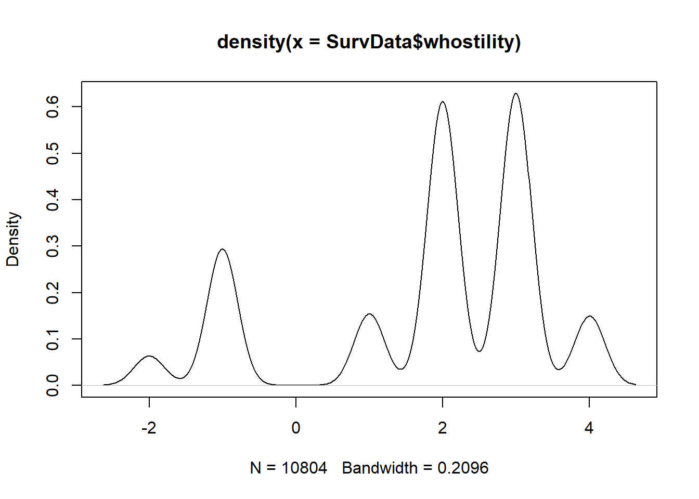
hist(SurvData$whostility)
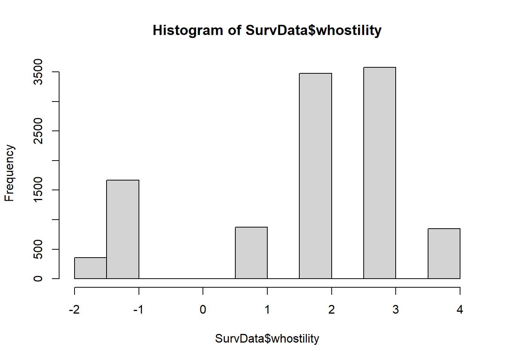
Additionally, some dataforms have labels attached to their columns, this is normal for data imported from spss, or stata. These labels provide information about the coding, without searching the codebook, these can be found with the attributes function. I load a dataset here, which has this type of labels. This data will also be used later.
$labels
Helt enig Nokså enig Både og Nokså uenig Helt uenig Vet ikke
1 2 3 4 5 6
Ubesvart
9
$label
[1] "Forebyggende arbeid"
$class
[1] "haven_labelled" "vctrs_vctr" "double"
It is also in Norwegian, apologies for that. The label is meant to give information about what the variable is, while the labels say what the numbers actually signify, when the surveyed respondent answered the questionnaire. Here we can therefore see that the respondent ranked agreement with a statement on a likert scale. The statement was related to whether or not preventative work is better than punishment to prevent criminal activity.
4 Data wrangling
Transforming data is (in my opinion) best done through the tidyverse system. The most key aspect of this framework is the usage of the pipe operator %>%, which takes the output from whatever is in front of the pipe, and gives it as the first argument in the function following the pipe (As a sidenote, if you want to call the preceeding object again, you can use a . to put it more places). This is useful because as a general rule, tidyverse functions all have a dataset as the first argument in their functions, and output a dataset from the function, meaning that you can run a function on a dataset, then pipe that into a new function, in a manner that makes more sense for beginners in programming. Tidyverse allows for many useful simplifications, such as selecting columns by names without complex indexing or name wrapping. In this section I will use the dataset previously outlined in the section on simple analysis. I will go through the most common data wrangling functions that I use in my processes.
library(tidyverse)## A simple pipe explanationSurvData %>%pull(whostility) %>%mean(na.rm =TRUE)
[1] 1.8097
# Is the same as mean(pull(SurvData, whostility), na.rm =TRUE)
[1] 1.8097
The code above demonstrates the improved intuity of using tidyverse functions. The code follows your natural progression of treatment of data, whereas the un-tidyversed code you have to start writing with the final function, and it is not easy to extend if you want to add further actions to the data when revising the code. It is easier to start with “I have this dataset”, then writing “I want to do something with this variable” and then “I want to do this function exactly”.
4.1 Dealing with bad names
Often times your data imported from excel will have really bad names, rife with capitalization and spacing. Ideally you want a dataset where variables do not have these things, so it is easier to memorize and enter into R. If I face this issue I will often utilize the janitor package, which can clean names into something more coherent. If there is space for instance in the variable name, then it has to be wrapped in the ` signs, which can be complicated to type out when auto-complete is not available.
library(janitor)df_example$`This Name is REALLY bad 120`<-"BAD"names(df_example)
[1] "names" "age"
[3] "fav_movie" "happy"
[5] "This Name is REALLY bad 120"
Mutate is the dplyr function for changing variables in a dataset. This means that the function can both create and modify existing variables in the dataset. As we saw in the last structure of our dataset, the gender variable is operationalized as 1 for men and 2 for women, we usually prefer a binary for this, so let us change that variable in a new dataset. Note that variable selecting in tidyverse functions are often quite straightforward, most if not all functions can specify variables by just writing them out in plain text as seen below.
SurvData <- SurvData %>%mutate(gender_subtracted = gender -1)## Lets compare the outputs to ensure successful transformationtable(SurvData$gender, SurvData$gender_subtracted)
0 1
1 5219 0
2 0 5585
table(SurvData$country)
Japan South Korea
5955 4849
A common thing you might find with your dataset is that the variables have the wrong type. Perhaps a column that was meant to be a number was read as a character, because the idiot who made the excel sheet decided to spell out “no data” in the missing cells (these people should be executed). In many instances the simplest way of changing a variable, is to force it into another class by using an as. function, as.numeric, as.character, as.Date, and as.double are common variations of this. There is also the factor function, which allows you to create ordinal values. Where the as. functions are relatively simple (perhaps except the date one), factor also requires that you supply a vector of the rankings of the factor.
One of the most common techniques for assigning new values, other than just committing straight mathematical operations on them, is to utilize a logical test to assign new values. The most simple way of doing this is the ifelse function. It, simply put, tests each element of a vector and then assigns a new value based on TRUE or FALSE response, the syntax is as follows ifelse(logicaltest, value_if_TRUE, value_if_FALSE). If for instance we wanted the new gender variable to be a character based on gender we could do the following.
This is doable for instances where the new variable is dichotomous, and while it is possible to put a second ifelse function inside the response for the results of the logical test, this can get extremely cluttered as several cases appear. Which is why the dplyr package, helpfully has the case_when function, which is a vectorized version of ifelse, the helpfile will even say so. case_when has a bit more complex of a syntax, where the logical test is followed by a ~ and then the assigned value, with commas separating all cases.
If you have a long set of variables you want to do the same thing to, the across selection function can be very helpful. When used within a mutate function it can apply the same function unto several columns. The function assignment is signalled here with a ~ which is called a “purr-style” lambda function, but other ways of assigning the function is technically possible. The .x following signifies the place the column to change has in the function used in it.
Across can also be extended with anonymous functions (that is technically what is being done behind the scenes), which I will cover later in the document.
vars_i <-names(joined_sets2)[16:29]joined_sets2_mutated <- joined_sets2 %>%mutate(across(all_of(vars_i), ~ haven::zap_labels(.x))) %>%## Heres a fun interaction with haven...mutate(across(all_of(vars_i), ~ifelse(.x >2.5, "High", "Low")))head(joined_sets2[,16:29])
# A tibble: 6 × 14
straff utkant likestilling eu eea u_hjelp organisasjonsmakt alkohol
<dbl+lbl> <dbl+l> <dbl+lbl> <dbl+l> <dbl> <dbl+l> <dbl+lbl> <dbl+l>
1 NA 3 [Bad… 4 [Noksa ue… 6 [Vet… NA 5 [Hel… 3 [Bade og] 3 [Bad…
2 NA 4 [Nok… 2 [Noksa en… 1 [Hel… NA 5 [Hel… 1 [Helt enig] 1 [Hel…
3 NA 4 [Nok… 2 [Noksa en… 1 [Hel… NA 5 [Hel… 1 [Helt enig] 2 [Nok…
4 NA 1 [Hel… 2 [Noksa en… 1 [Hel… NA 1 [Hel… 3 [Bade og] 4 [Nok…
5 NA 2 [Nok… 1 [Helt eni… 1 [Hel… NA 5 [Hel… 1 [Helt enig] 1 [Hel…
6 NA 3 [Bad… 1 [Helt eni… 1 [Hel… NA 3 [Bad… 3 [Bade og] 1 [Hel…
# ℹ 6 more variables: forskjeller <dbl+lbl>, int_lvl <dbl+lbl>,
# off_tjen <dbl+lbl>, krist <dbl+lbl>, innvandring <dbl+lbl>, klima <dbl+lbl>
#Compared withhead(joined_sets2_mutated[,16:29])
# A tibble: 6 × 14
straff utkant likestilling eu eea u_hjelp organisasjonsmakt alkohol
<chr> <chr> <chr> <chr> <chr> <chr> <chr> <chr>
1 <NA> High High High <NA> High High High
2 <NA> High Low Low <NA> High Low Low
3 <NA> High Low Low <NA> High Low Low
4 <NA> Low Low Low <NA> Low High High
5 <NA> Low Low Low <NA> High Low Low
6 <NA> High Low Low <NA> High High Low
# ℹ 6 more variables: forskjeller <chr>, int_lvl <chr>, off_tjen <chr>,
# krist <chr>, innvandring <chr>, klima <chr>
4.2.3 New variables as vectors
Recall that a dataframe is practically just a vector of vectors. Each column, or variable is essentially just a vector with the same length as the total dataframe. This means you can also create new variables by creating a vector of the same length and in the same order as the dataframe. Most operations you do on vectors from the dataframe will result in this kind of mergible vector. If I add together the vector-variable of interest and the vector variable poldisc, the result is simply a vector of the same length and in the same order as the dataframe. Therefore, for simple variable changes, it is sometimes easier to just assign it like this, “manually” if you will.
length(SurvData$interest + SurvData$PolDisc)
[1] 10804
### Essentially, the following will remain true for 1:rows in dataframe(SurvData$interest + SurvData$PolDisc)[8092] == SurvData$interest[8092] + SurvData$PolDisc[8092]
[1] TRUE
##SurvData$pol_index <- (SurvData$PolDisc + SurvData$interest)/2## Making the mean out of the twosummary(SurvData$pol_index)
Min. 1st Qu. Median Mean 3rd Qu. Max. NA's
-1.000 2.000 2.000 2.263 2.500 3.500 5939
4.3 Subsetting on variables
Later I will go through the process for selecting away cases by filter, but first, as previously mentioned, there is a family of tidyselect functions, of which the most relevant in our instance is the normal select function. There are two main ways of selecting within this function, you can either select the variables you want, or select away the variables you don’t want. Within a select function, if you write the names of the variables you want, then those are the ones you get in the subset, but if you write a - sign in front, then it means the dataset without that (or those) variable(s).
Selecting in tidyverse is also supported by a range of other specific tidyselect functions, which allows you to select certain variables based on a pattern, such as the starts_with function, which selects all variables that start with a specified string pattern. If you have a vector of your variable names you can also use the all_of function to select all of those. This might not seem so useful here, but a general recommendation is that if you are repeating a process more than twice, it is always useful to write a simpler process like a function or a variable for it.
The second common thing to do when treating data is to filter it, keeping only certain observations. Again you would use a logical test in order to filter these things, so get used to writing these sorts of tests. I showed earlier that the data had two countries, lets make a new dataframe with only Japan. Note also that this function will remove lines, and as such, you should not overwrite the old dataframe when filtering, like I did in the mutate section.
jap_surv <- SurvData %>%filter(country =="Japan")
We can add more tests to filter it further, either with a binding logical operator, or a comma, but comma adds strict additional requirement.
A common need is also to use lower level data to create data on summaries of aggregate level, like the average level of women respondents across the survey years. This also has a slightly complex syntax, but you first group the dataframe with the function group_by, which specifies a set of variables that units should be grouped into, and then feed that into the summarise (summarize works too for americans) function, which specifies the new variables you want to create on the aggregate level. These new variables need to be specified by functions that summarise elements however, such as mean. In this code I will make an aggregate of Japan and South Korea over the time periods, with the number of respondents in each, and the average degree of anti-women legislator sentiment.
grouped_f <- SurvData %>%mutate(whostility =ifelse(whostility <0, NA, whostility)) %>%# You can add the unchanged vector as a responsein an ifelse, Values less than 0 are missing categories in WVSgroup_by(country, year) %>%summarise(respondents =n(),whostility =mean(whostility, na.rm =TRUE))head(grouped_f)
# A tibble: 6 × 4
# Groups: country [2]
country year respondents whostility
<chr> <dbl> <int> <dbl>
1 Japan 1995 1054 2.35
2 Japan 2000 1362 2.60
3 Japan 2005 1096 2.56
4 Japan 2010 2443 2.60
5 South Korea 1996 1249 2.27
6 South Korea 2001 1200 2.53
Given that grouping is part of tidyverse, we can also use tidyselect within it. Lets say I want the mean of several variables.
# A tibble: 6 × 5
# Groups: country [2]
country year PolDisc interest whostility
<chr> <dbl> <dbl> <dbl> <dbl>
1 Japan 1995 2.39 2.43 2.35
2 Japan 2000 2.28 2.26 2.60
3 Japan 2005 NaN 2.27 2.56
4 Japan 2010 NaN 2.24 2.60
5 South Korea 1996 2.03 2.37 2.27
6 South Korea 2001 2.16 2.52 2.53
Here we see a NaN example, where a mean of nothing is not a number, since we specified na.rm to be true. This is because the question PolDisc was not asked in 2005 and 2010 for Japan, so all observations are NA, when NA’s are filtered out from na.rm, this then leaves the mean of nothing, which is not a number.
4.6 Joining
The most common iteration of joining is the left_join function. This joins a secondary dataset to the right of the first dataset. In order to join the datasets you must specify a set of “keys”, a set of variables which the values in the left dataset is supposed to match to the right dataset. These do not have to create an exact match between datasets, multiple points in the original set can match single values in the joining set, but the reverse makes things complicated. If a single row in the original set matches multiple rows of the new one, then duplicates are created. For this reason make sure that the original dataset is either on a sub-level hierarchically, or that there are unique and exact matches in the new dataset.
The most common scenario to join values in my experience is when you have aggregate data that you want to join in to individual level data. Say I have survey result data from certain countries, and I want to join in some contextual variables. I could match that on just country and year variables. Below I utilize the survey in Norwegian parties, first I aggregate a frame, then join it.
joined_lim <- joined_sets2 %>%mutate(eu =ifelse(eu %in%c(1,2,3,4,5), eu, NA)) %>%select(kjonn, parti, tid, eu)joined_lim_agg <- joined_sets2 %>%mutate(eu =ifelse(eu %in%c(1,2,3,4,5), eu, NA)) %>%group_by(parti, tid) %>%summarise(mean_eu =mean(eu, na.rm =TRUE))joined_lim[c(3,4,64,65,556,557,1231,1232,5688, 5689,6783, 6784),] ## Indexing some random rows, so we can see variance
# A tibble: 12 × 4
kjonn parti tid eu
<dbl+lbl> <chr> <dbl> <dbl>
1 1 [Mann] FrP 1991 1
2 1 [Mann] FrP 1991 1
3 2 [Kvinne] KrF 1991 5
4 2 [Kvinne] KrF 1991 5
5 2 [Kvinne] V 1991 4
6 2 [Kvinne] V 1991 5
7 1 [Mann] V 1991 3
8 2 [Kvinne] V 1991 5
9 2 [Kvinne] V 2009 3
10 1 [Mann] V 2009 4
11 2 [Kvinne] FrP 2009 5
12 NA FrP 2009 5
joined_lim_joined <- joined_lim %>%left_join(joined_lim_agg, by =c("parti", "tid")) # Here i join in the new set, i know that the parti and tid variables are in both setsjoined_lim_joined[c(3,4,64,65,556,557,1231,1232,5688, 5689,6783, 6784),] ## Indexing the same numbers
# A tibble: 12 × 5
kjonn parti tid eu mean_eu
<dbl+lbl> <chr> <dbl> <dbl> <dbl>
1 1 [Mann] FrP 1991 1 2.02
2 1 [Mann] FrP 1991 1 2.02
3 2 [Kvinne] KrF 1991 5 4.44
4 2 [Kvinne] KrF 1991 5 4.44
5 2 [Kvinne] V 1991 4 4.16
6 2 [Kvinne] V 1991 5 4.16
7 1 [Mann] V 1991 3 4.16
8 2 [Kvinne] V 1991 5 4.16
9 2 [Kvinne] V 2009 3 3.03
10 1 [Mann] V 2009 4 3.03
11 2 [Kvinne] FrP 2009 5 3.08
12 NA FrP 2009 5 3.08
Since mean_eu was the only variable in the aggregated set except the key variables parti and tid, this is the only new column in the merged dataset.
left_join is by far the most common way of joining a dataset when you want new information or elements to be added to your existing dataset. There also exist right_join and full_join, but right_join is practically the same as left, just less intuitive and more niche in my opinion, while full_join should not be used because I can rarely think of a scenario where it makes sense to use in relation to dataset specifications.
The other relevant form of merging is when you have new data that is identical in structure to the old data, but they represent perhaps new observations to that data. In this instance you seek to bind the rows together, and suitably the function is just called bind_rows, if the datasets are structured properly, then you can just enter two datasets in that function and it should merge them. If they are not similar, you have to data wrangle them a bit. Perhaps the newer frame from a later survey coded all their numerical responses as character vectors, then you have to make sure that the columns of this variable have consistent datatypes, because R will not do that work for you.
4.7 Pivoting
Say we have a dataset where differences in years are stored in columns, and we want a single row for each yearly observation. Or we have data that is more extensive than we want, and we want to limit the number of rows. This can be achieved through pivot functions, primarily pivot_wider and pivot_longer which have fairly intuitive names, they make the dataframe wider or longer, by making it shorter or narrower, respectively. The way to use them is to feed a dataframe into it, with a pipe of course, and then, depending on wider or narrower, you have to specify which columns the names go to or from, and where the values go to and from. For a wider pivot, the new names are all a class of variables, such as a character string for instance, when specifying names_from, this is the variable that the new columns will be named after.
Lets use a different dataset for a more applicable situation. I am here loading a dataset from a survey which is meant to measure agreement within party structures, I transform the question values to instead be distance to the mean of the party.
## Will limit this dataset to only a single party, and a couple of questions and key variables## Ignore the complex code, it might make sense latervars_i <-names(joined_sets2)[16:29] ## I know columns 16:29 are the ones I wantmean_values_for_transf <- joined_sets2 %>%select(parti, tid, all_of(vars_i)) %>%group_by(parti, tid) %>%summarise(across(all_of(vars_i), ~mean(.x, na.rm =TRUE))) %>%pivot_longer(cols =all_of(vars_i), names_to ="question", values_to ="mean_vals")head(mean_values_for_transf)
# A tibble: 6 × 4
# Groups: parti [1]
parti tid question mean_vals
<chr> <dbl> <chr> <dbl>
1 Ap 1991 straff NaN
2 Ap 1991 utkant 1.81
3 Ap 1991 likestilling 1.69
4 Ap 1991 eu 4.17
5 Ap 1991 eea NaN
6 Ap 1991 u_hjelp 3.67
Note that we now only have four variables, but far more rows, instead of each question being a variable, each question is now a row for an individual. Lets do the same for the un-summarised version, then left_join this aggregate.
joined_sets2_i <-joined_sets2joined_sets2_i$id <-1:nrow(joined_sets2) ## If you want a fun story, ask why this is here........new_joined <- joined_sets2_i %>%mutate(across(all_of(vars_i), ~ haven::zap_labels(.x)),across(all_of(vars_i), ~ifelse(!(.x %in%c(1,2,3,4,5)), NA, .x))) %>%## Likert scale, so outside 1-5 is missing valspivot_longer(cols =all_of(vars_i), names_to ="question", values_to ="q_response") %>%left_join(mean_values_for_transf, by =c("parti", "tid", "question")) ## Note the join so that the mean vals for the questions is there as welldim(new_joined) ## Gets the dimensions of the object
[1] 136010 23
As you can see the new frame has 136010 rows, and 23 columns, longer and narrower than the original one. Let’s now turn that frame back to the original set, but now with “distance from party-year mean” as the variable on each question. Note that pivot_longer requires you to specify the columns that should be pivoted from, in addition to their destination, while pivot_wider knows that the names are going to be column names, and the values fill columns. That was poorly worded, remind me to come back to that and make it make sense.
As a sidenote, this section had to go through several revisions, because nothing works on first attempt, so do not be fooled into thinking this is an easy process, but practice makes perfect, and by using this language for yourself you eventually become quite apt at finding the source of your mistakes (and very good at googling).
dist_means_joined <- new_joined %>%mutate(dist_score = q_response - mean_vals) %>%select(-q_response, -mean_vals) %>%### Removing these because they are reduntant and would create strange framespivot_wider(names_from ="question", values_from ="dist_score")head(joined_sets2[,vars_i])
# A tibble: 6 × 14
straff utkant likestilling eu eea u_hjelp organisasjonsmakt alkohol
<dbl+lbl> <dbl+l> <dbl+lbl> <dbl+l> <dbl> <dbl+l> <dbl+lbl> <dbl+l>
1 NA 3 [Bad… 4 [Noksa ue… 6 [Vet… NA 5 [Hel… 3 [Bade og] 3 [Bad…
2 NA 4 [Nok… 2 [Noksa en… 1 [Hel… NA 5 [Hel… 1 [Helt enig] 1 [Hel…
3 NA 4 [Nok… 2 [Noksa en… 1 [Hel… NA 5 [Hel… 1 [Helt enig] 2 [Nok…
4 NA 1 [Hel… 2 [Noksa en… 1 [Hel… NA 1 [Hel… 3 [Bade og] 4 [Nok…
5 NA 2 [Nok… 1 [Helt eni… 1 [Hel… NA 5 [Hel… 1 [Helt enig] 1 [Hel…
6 NA 3 [Bad… 1 [Helt eni… 1 [Hel… NA 3 [Bad… 3 [Bade og] 1 [Hel…
# ℹ 6 more variables: forskjeller <dbl+lbl>, int_lvl <dbl+lbl>,
# off_tjen <dbl+lbl>, krist <dbl+lbl>, innvandring <dbl+lbl>, klima <dbl+lbl>
head(dist_means_joined[,vars_i])
# A tibble: 6 × 14
straff utkant likestilling eu eea u_hjelp organisasjonsmakt alkohol
<dbl> <dbl> <dbl> <dbl> <dbl> <dbl> <dbl> <dbl>
1 NA -0.211 1.23 NA NA 0.435 0.977 1.17
2 NA 0.789 -0.772 -1.29 NA 0.435 -1.02 -0.829
3 NA 0.789 -0.772 -1.29 NA 0.435 -1.02 0.171
4 NA -2.21 -0.772 -1.29 NA -3.56 0.977 2.17
5 NA -1.21 -1.77 -1.29 NA 0.435 -1.02 -0.829
6 NA -0.211 -1.77 -1.29 NA -1.56 0.977 -0.829
# ℹ 6 more variables: forskjeller <dbl>, int_lvl <dbl>, off_tjen <dbl>,
# krist <dbl>, innvandring <dbl>, klima <dbl>
5 Modelling
I will not spent any considerable time going into modelling here, given that outside of glm and lm, most operations will have a dedicated package with unique instructions that you will simply have to learn on your own. The main family of linear models, OLS estimations, are accessed through the lm function. This function accepts a formula as its first argument, which is specified with the dependent variable, followed by a tilde, then the specification of interest. We always store this as an object, a regression output, which we can interact with through generic functions such as summary, which gives a general output of the regression model.
SurvData <- SurvData %>%mutate(wave =case_when( ## Just using year will give a strange intercept year ==1995| year ==1996~1, year ==2000| year ==2001~2, year ==2005~3, year ==2010~4 ))model_1 <-lm(whostility ~ gender_text + country + wave + PolDisc + interest, data = SurvData)summary(model_1)
Call:
lm(formula = whostility ~ gender_text + country + wave + PolDisc +
interest, data = SurvData)
Residuals:
Min 1Q Median 3Q Max
-3.4824 -0.5197 0.4267 0.8782 2.8226
Coefficients:
Estimate Std. Error t value Pr(>|t|)
(Intercept) 1.57765 0.10353 15.238 < 2e-16 ***
gender_text2 0.21967 0.04171 5.266 1.45e-07 ***
countrySouth Korea 0.76820 0.04195 18.314 < 2e-16 ***
wave 0.02767 0.04117 0.672 0.501501
PolDisc -0.02516 0.03334 -0.755 0.450494
interest -0.08811 0.02650 -3.325 0.000889 ***
---
Signif. codes: 0 '***' 0.001 '**' 0.01 '*' 0.05 '.' 0.1 ' ' 1
Residual standard error: 1.43 on 4859 degrees of freedom
(5939 observations deleted due to missingness)
Multiple R-squared: 0.07146, Adjusted R-squared: 0.07051
F-statistic: 74.79 on 5 and 4859 DF, p-value: < 2.2e-16
From it we can see that women and south koreans in general are less hostile to women as legislators, we can underpin this with an interaction effect. which is specified with a multiplier sign.
model_2 <-lm(whostility ~ gender_text + country + wave + PolDisc + interest + country*gender_text, data = SurvData)summary(model_2)
Call:
lm(formula = whostility ~ gender_text + country + wave + PolDisc +
interest + country * gender_text, data = SurvData)
Residuals:
Min 1Q Median 3Q Max
-3.5528 -0.5528 0.4501 0.9522 2.7519
Coefficients:
Estimate Std. Error t value Pr(>|t|)
(Intercept) 1.65152 0.10565 15.631 < 2e-16 ***
gender_text2 0.07895 0.05859 1.348 0.177844
countrySouth Korea 0.62420 0.05943 10.502 < 2e-16 ***
wave 0.03058 0.04113 0.743 0.457285
PolDisc -0.02769 0.03331 -0.831 0.405863
interest -0.08773 0.02647 -3.315 0.000924 ***
gender_text2:countrySouth Korea 0.28011 0.08199 3.417 0.000639 ***
---
Signif. codes: 0 '***' 0.001 '**' 0.01 '*' 0.05 '.' 0.1 ' ' 1
Residual standard error: 1.428 on 4858 degrees of freedom
(5939 observations deleted due to missingness)
Multiple R-squared: 0.07369, Adjusted R-squared: 0.07255
F-statistic: 64.41 on 6 and 4858 DF, p-value: < 2.2e-16
Effect of South Korea holds, but effect of being a woman becomes insignificant. For binary data we need a link function and a generalized linear model, which can be accesses through the function glm in R. Below I model the outcome of having voted.
SurvData_vot <- SurvData %>%filter(!is.na(voted)) %>%## Filter out all obs that did not votemutate(vot_binary =ifelse(voted ==1, 1, 0))logit_m_1 <-glm(vot_binary ~ gender_cased + country + wave, family ="binomial", data = SurvData_vot)logit_m_2 <-glm(vot_binary ~ gender_cased + country + wave + whostility, family ="binomial", data = SurvData_vot)logit_m_3 <-glm(vot_binary ~ gender_cased + country + wave + whostility + interest, family ="binomial", data = SurvData_vot)huxtable::huxreg(logit_m_1, logit_m_2, logit_m_3) ## This is where I would normally use stargazer
(1)
(2)
(3)
(Intercept)
3.745 ***
3.722 ***
5.129 ***
(0.231)
(0.231)
(0.257)
gender_casedWoman
-0.327 ***
-0.336 ***
-0.227 ***
(0.056)
(0.056)
(0.057)
countrySouth Korea
-0.005
-0.079
0.215 **
(0.058)
(0.062)
(0.066)
wave
-0.816 ***
-0.828 ***
-0.882 ***
(0.060)
(0.060)
(0.062)
whostility
0.058 ***
0.040 *
(0.017)
(0.018)
interest
-0.556 ***
(0.036)
N
5939
5939
5939
logLik
-3748.062
-3742.470
-3610.273
AIC
7504.123
7494.940
7232.545
*** p < 0.001; ** p < 0.01; * p < 0.05.
## But stargazer does not work in quarto html outputs
6 Plotting
To paraphrase the Beatles, all you need is ggplot. This framework allows you to plot essentially everything, although some packages obviously makes this plotting simpler, but most of them are just wrappers for ggplot code (even some python and Julia packages use ggplot in R as a backend). You could write entire books worth of information on plotting with ggplot. In fact someone did, I have it if you’re interested.
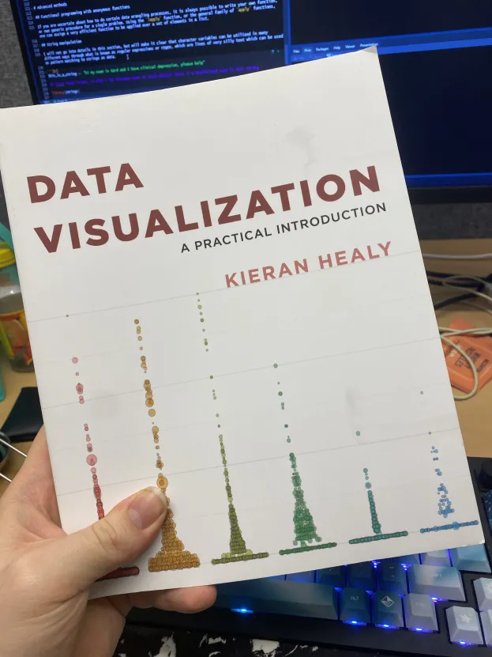
neat book
6.1 Layers
It is prudent to think of visualisations in ggplot as layered. These layers are bound together with plus signs, and each construct a layer ontop of the plot or other visualisation you want to make.
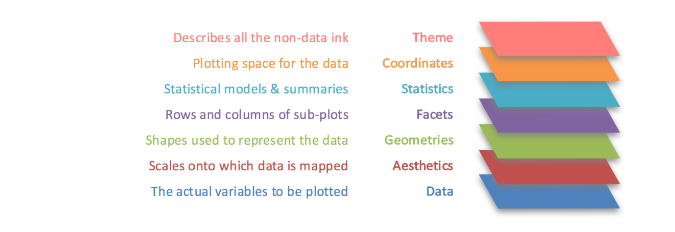
layers of ggplot, stolen from: https://lfoswald.github.io/2021-spring-stats2/materials/session-3/03-online-tutorial/
The most basic general layer that all ggplots need is the base layer of the ggplot function itself. In this function you specify your dataset, and the general aesthetics. Within the ggplot function (and most geom_ derivatives) there is an aes argument, this is an aesthetic argument, it specifies what variable from the dataset should represent what element of the plot. Based on the plot type the type of aesthetic accepted varies, but a list of potential aesthetics are: x, y, color, fill, shape, size, linewidth, linetype, etc. Following this, you add a layer that specifies what type of plot you want, this is done through a family of geom_ functions such as geom_point for scatterplot, geom_bar for a barplot, geom_boxplot for a boxplot with distributions, etc. Which you use depends on how you want to visualise. If you are curious about the options, type geom_ in R, and switch through the optins that it auto-completes to. Lets use this information to build a scatterplot of the first grouped dataframe created earlier.
grouped_f %>%### Obviously you can pipe it in ggplot(aes(x=year, y=whostility, color = country)) +geom_point()
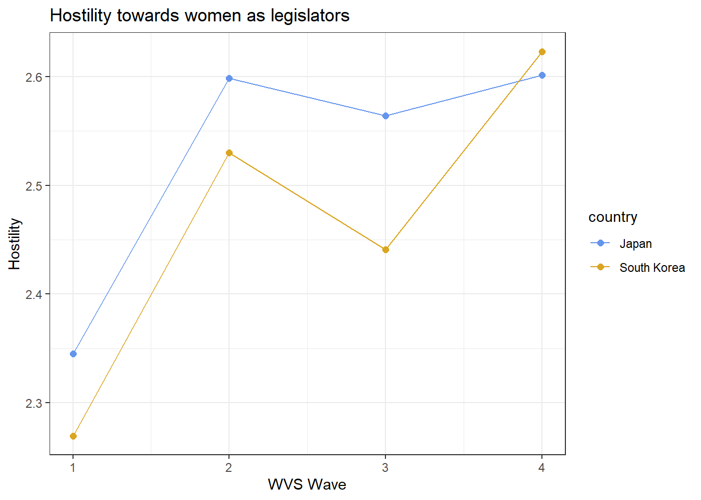
Very ugly, but it does the job. We can now add a couple of layers to improve the look. There are several themes that can be used by default, such as theme_bw which is my favourite, just add the function in a layer. Additionally we can modify the labels of the plot through the lab function as a separate layer.
grouped_f %>%ggplot(aes(x=year, y=whostility, color = country)) +geom_point() +theme_bw() +labs(title ="Here's a Title", x ="Time period", y ="Anti-women sentiment", color ="Region")
For the final plot, I will also do some changes to the datastructure so that it visualises a bit better, there’s perhaps too much space between the timings as it is. Additionally, I think the points are too small, so I will change them manually through arguments fed through the layers. Finally, I also add a geom_line which when combined in this instance, draws a line between the points, separated by the color specification, by default, geom_ functions inherit their aesthetic from the layer previous, so the same aes specification is inherited from the higher level.
grouped_f %>%mutate(wave =case_when( ### Mutating to better cases, so they are parallel year ==1995| year ==1996~1, year ==2000| year ==2001~2, year ==2005~3, year ==2010~4 )) %>%ggplot(aes(x=wave, y = whostility, color = country)) +### Setting aestheticgeom_point(size =2) +# Scatterplot, with 2 as size of the dotsgeom_line() +# make a line, inherits past aestheticstheme_bw() +# theme_bw is the bestscale_color_manual(values =c("cornflowerblue", "goldenrod")) +## Values are assigned alphabetically when set manually, so Japan gets first colourlabs(title ="Hostility towards women as legislators", x ="WVS Wave", y ="Hostility") ## Creating labels
The values and precise aesthetics of a variable can be set with the function family scale_AESTHETIC_TYPE, which provides a large range of ways to modify the aesthetics. In the plot above I manually (therefore manual at the end) assign two values to the color aesthetic (therefore color in the middle). This function family can also modify labels and other elements.
We can also save the resulting plot, by assigning it to an object, and using the dedicated ggsave function, which allows for a ton of useful settings.
plot_obj <- grouped_f %>%mutate(wave =case_when( ### Mutating to better cases, so they are parallel year ==1995| year ==1996~1, year ==2000| year ==2001~2, year ==2005~3, year ==2010~4 )) %>%ggplot(aes(x=wave, y = whostility, color = country)) +### Setting aestheticgeom_point(size =2) +# Scatterplot, with 2 as size of the dotsgeom_line() +# make a line, inherits past aestheticstheme_bw() +# theme_bw is the bestscale_color_manual(values =c("cornflowerblue", "goldenrod")) +## Values are assigned alphabetically when set manually, so Japan gets first colourlabs(title ="Hostility towards women as legislators", x ="WVS Wave", y ="Hostility") ## Creating labelsggsave("plot_obj.jpeg", plot = plot_obj, device ="jpeg", path ="./images",width =12.5, height =7.5)## and now its here, contrast with earlier listes files in imageslist.files("./images/")
unlink("./images/plot_obj.jpeg") ## Just removing it
6.2 Maps
You can also utilize the ggplot package, in conjunction with the sf package, to visualise maps. This requires shapefiles, which describes the general outlines of some countries. These can also be accessed through several packages, or downloaded from gadm manually. There are a lot of intricacies involving maps and shapefiles in general, but to use it with ggplot it is most common to have it as a sf type file, you can see that the map assignment in the code chunk below is piped into a st_as_sf function, this transform the tera (I believe it is) class object, into an sf class object. In some instances we would have to assign a crs as well, but that’s perhaps too much complicated to talk about right now. Note also that the ggplot layer is itself empty, because the data and aesthetic mapping needs to be from a shapefile function of geom_sf.
library(geodata) # gadm function can download shapefile data from gadm's APIlibrary(sf)nor_map <-gadm(country ="NO", level =1, path ="./") %>%## Try running this but swapping to "SE" for a swedish mapst_as_sf()ggplot() +## in map data the ggplot is emptygeom_sf(data = nor_map)
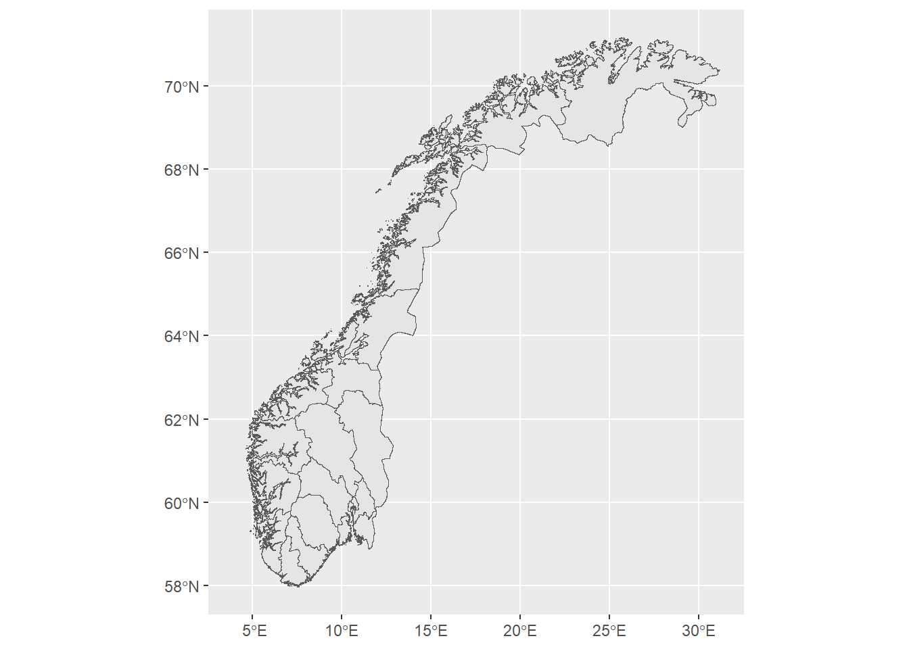
Aesthetics are possible, filling the map to make a choropleth for instance. You can also left join data that are not of a GIS character straight into this dataframe, then use those variables as aesthetics, but for now lets just make a new variable based on whether I have visited the county.
nor_map <- nor_map %>%mutate(me_there =case_when( HASC_1 =="NO.AA"~"Yes", HASC_1 =="NO.AK"~"Home", HASC_1 =="NO.BU"~"Yes", HASC_1 =="NO.FI"~"No", HASC_1 =="NO.HE"~"Yes", HASC_1 =="NO.HO"~"Yes", HASC_1 =="NO.MR"~"No", HASC_1 =="NO.NO"~"No", HASC_1 =="NO.NT"~"No", HASC_1 =="NO.OF"~"Yes", HASC_1 =="NO.OP"~"Yes", HASC_1 =="NO.OS"~"Yes", HASC_1 =="NO.RO"~"Yes", HASC_1 =="NO.SF"~"Home", HASC_1 =="NO.ST"~"Yes", HASC_1 =="NO.TE"~"Yes", HASC_1 =="NO.TR"~"No", HASC_1 =="NO.VA"~"Yes", HASC_1 =="NO.VF"~"Yes"))ggplot() +geom_sf(data = nor_map, aes(fill = me_there)) +theme_void() +## Removes the coordinate lines seen in the first onelabs(title ="Mitt lille land", fill ="Have I been?") +scale_fill_manual(values =c("goldenrod", "firebrick", "cornflowerblue"))
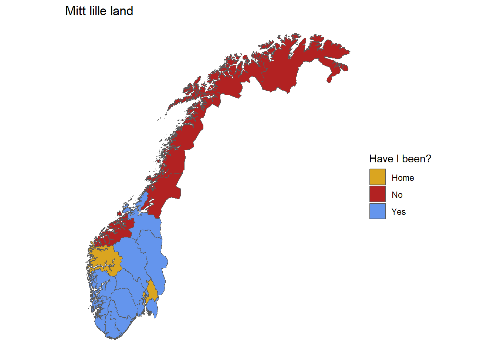
Note that the aesthetic argument is fill not colour (I have done that mistake several times).
Often you will also want labels on the geographical points.
nor_map <- nor_map %>%mutate(last_there =case_when( HASC_1 =="NO.AA"~"2017", HASC_1 =="NO.AK"~"2025", HASC_1 =="NO.BU"~"2024", HASC_1 =="NO.FI"~"Never", HASC_1 =="NO.HE"~"2016", HASC_1 =="NO.HO"~"2024", HASC_1 =="NO.MR"~"Never", HASC_1 =="NO.NO"~"Never", HASC_1 =="NO.NT"~"Never", HASC_1 =="NO.OF"~"2025", HASC_1 =="NO.OP"~"2016", HASC_1 =="NO.OS"~"2025", HASC_1 =="NO.RO"~"2013", HASC_1 =="NO.SF"~"2008", HASC_1 =="NO.ST"~"2014", HASC_1 =="NO.TE"~"2013", HASC_1 =="NO.TR"~"Never", HASC_1 =="NO.VA"~"2016", HASC_1 =="NO.VF"~"2024"))ggplot() +geom_sf(data = nor_map) +geom_label(data = nor_map, aes(label = last_there, geometry = geometry),stat ="sf_coordinates") +theme_void() +## Removes the coordinate lines seen in the first onelabs(title ="Disclosing to much Personal Information")
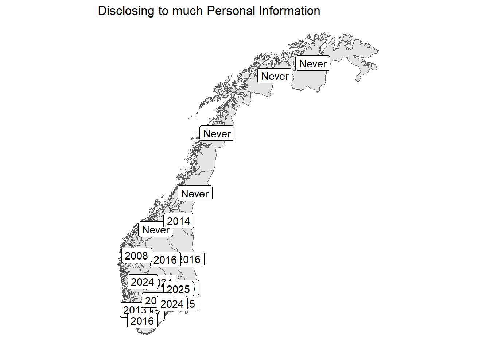
Clearly too cluttered, this map would need a lot of improvement. Increasing the plot size and decreasing label size might help, but then you run into other issues in regards to visibility. Perhaps this visualisation just is not suited to labels itself? These are aesthetic considerations you should make when creating plots. Remember that plots should be intuitive, and visually easy to understand and get information from.
7 Advanced methods
7.1 For loops and flow control
A central part of programming in most languages is the flow control and for loops. For loops in R are slower than most other languages, and usually apply family of functions is preferred, since they can basically function in the same way as for loops, with the right specifications. But knowledge of loops can give you a tool to solve certain difficult tasks where you do not want to spend a couple of hours finding a relevant function. For loops consist of the function for(iterator in sequence) followed by curly brackets { and } which contain the function expression to be repeated. The iterator is the thing that changes with each loop. A for loop is an instruction to do the same task over a set of times.
Below is a simple for loop. First I create a vector of some numbers. In the loop itself, I call the iterator i, and specify that I am looping over a sequence of numbers, from 1 to the length of the vector. I then use that operator as an index to the vector, so that for each iteration of the loop it prints the i vector position squared.
loopy_vector <-c(15,23,34,66,32)for(i in1:length(loopy_vector)){print(loopy_vector[i]^2) ### Note that unlike outside the loop, it does not print results automatically}
[1] 225
[1] 529
[1] 1156
[1] 4356
[1] 1024
For loops have what we call a global scope by default, meaning they can and will interact with global variables, and assignment inside the loops are tracked in the global environment, and change variables you have in your environment, unlike lapply, which usually only changes return values.
7.1.1 flow control
For loops are just one version of repeating code, while and repeat also do similar things, however, I have never used them, and highly doubt the reader will do as well.
Flow control refers to ways in which you control a for loop or other similar iterative processes. These keywords are highlighted differently than other keyterms (in my instance they are red (I think, I cant see colours), but it varies with RStudio theme). These words are amonst others:
if(){} code in the bracket only executed if the logical test within parenthesis returns TRUE, can be followed by else
else{} follows the end of the if code bracket, code is executed if the test in the if function is returned as FALSE
next, usually nested within an if or else test, skips to the next iteration of the loop.
break, exits the loop completely, stopping the iteration over loops, needs to be present in a repeat loop, or it will never stop
return, specifies what object or element within the function or loop that should be returned when the iteration is complete, by default the function will return the last object created within it.
switch, is also base highlighted, and is in essence just a baseR version of case_when, but a fair bit more complicated, no need to learn it
stop, nested within a statement of sorts, stops a function or loop, and executes an error action, for instance to print out where the error was thrown (oh my god why haven’t I used this more for myself)
try, attempts to execute, and will not stop a loop even if failing to execute the code. Can also be modified with error handling programming, and the tryCatch function, which can attempt to catch these errors. Useful for loops where you know certain elements will throw an error.
## showing ifs and elsesnumbers <-c(1:10)for(i in1:length(numbers)){if(numbers[i] %%2==0){print(paste0("This number: ", numbers[i], ", is even!")) }else{print(paste0("This number: ", numbers[i], ", is odd!")) }}
[1] "This number: 1, is odd!"
[1] "This number: 2, is even!"
[1] "This number: 3, is odd!"
[1] "This number: 4, is even!"
[1] "This number: 5, is odd!"
[1] "This number: 6, is even!"
[1] "This number: 7, is odd!"
[1] "This number: 8, is even!"
[1] "This number: 9, is odd!"
[1] "This number: 10, is even!"
## Showing repeat, and breakiter <-1repeat{print(paste0("iterator is now: ", iter, "!")) iter <- iter +1if(iter ==12){print(paste0("oh no, iterator ", iter, " broke the loop! :("))break }}
[1] "iterator is now: 1!"
[1] "iterator is now: 2!"
[1] "iterator is now: 3!"
[1] "iterator is now: 4!"
[1] "iterator is now: 5!"
[1] "iterator is now: 6!"
[1] "iterator is now: 7!"
[1] "iterator is now: 8!"
[1] "iterator is now: 9!"
[1] "iterator is now: 10!"
[1] "iterator is now: 11!"
[1] "oh no, iterator 12 broke the loop! :("
7.2 Functional programming with anonymous functions
If you are uncertain about how to do certain data wrangling processes, it is always possible to write your own function, or own generic procedure for a single problem. Using the lapply function, or the general family of apply functions, one can assign a very efficient function to be applied over a set of elements in a list. The letter in front usually specifies what type of data you will get back, where lapply is the easiest to use, since it just returns a list, is therefore less likely to throw a merger error. sapply will attempt to return the simplest datatype possible, vapply will return a vector. Note that these types of anonymous functions have a different scope than for loops. All variables within the function exists solely within the function and cannot be called into the global environment. As previously mentioned this can be circumvented with the global environment assignment operator <<- but there is rarely a situation where the usage is necessary.
lapply(loopy_vector, FUN =function(x){ ## x serves here as our "iterator" y <- x^2return(y)})
Note that the output from the function is a list, with nested singular values, a normal method is to wrap a lapply function in an unlist function, or to feed the lapply to one using a pipe.
I demonstrate a more complex code chunk below, I will create a function that estimates Pi based on Monte Carlo sampling. Note the usage of local variables assigned, as well as the different usages of the iterator. Given that we are “looping” over the vector of different number, the iterator in each sequence becomes the number from the vector.
sample_nums <-c(10, 100, 1000, 10000, 100000)lapply(sample_nums, function(x){ x_coord <-runif(x, min =0, max =1) ## Randomly create coordinates in a 1x1 square y_coord <-runif(x, min =0, max =1) ## Note i use the x iterator as numbers of samples dist <-sqrt(x_coord^2+ y_coord^2) ## Measure their distance to origin withiners <-ifelse(dist <=1, TRUE, FALSE) ## If they have 1 or less in dist, they are inside the circle pi <- (sum(withiners)*4)/x ## the share of dots inside the circle multiplied by 4 is pi key <-paste0("Using ", x, " Samples, Pi is estimated to be ", pi, " (ish)") ## Create a return messagereturn(key)}) %>%unlist() ## Unlisting the results
[1] "Using 10 Samples, Pi is estimated to be 3.2 (ish)"
[2] "Using 100 Samples, Pi is estimated to be 2.76 (ish)"
[3] "Using 1000 Samples, Pi is estimated to be 3.268 (ish)"
[4] "Using 10000 Samples, Pi is estimated to be 3.146 (ish)"
[5] "Using 1e+05 Samples, Pi is estimated to be 3.13228 (ish)"
For a more practical point, I will demonstrate using a lapply function to create a new variable in our old dataset. Let’s say I want to construct an “anti-establishment” index, which is a function of opposition to EU or EEA, opposition to public services, opposition to gender equality, and extreme position on the left_right scale. In this instance I will utilize an apply function which will go over the rows of the dataset, in only the columns I want. When specifying a margin for the simple apply function, it will take either the rows or columns specified and turn them into vectors, so note that the iterator below can be indexed over, to get the relevant variable.
vars_ext <-c("eu", "eea", "off_tjen", "likestilling", "left_right")joined_sets2$anti_establishment <-apply(joined_sets2[, vars_ext], MARGIN =1, ## Margin argument specifies to view each extract by row or columnFUN =function(x){ opposed_eu <-ifelse(x[1] >4, 1, 0) ## If answered 5, completely disagree, then val 1 opposed_eea <-ifelse(x[2] <2, 1, 0) # This one is framed reverse opposed_public <-ifelse(x[3] >4, 1, 0) opposed_equal <-ifelse(x[4] >4, 1, 0) extreme <-ifelse(x[5] >7| x[5] <3, 1, 0) anti_val <-mean(c(opposed_eu, opposed_eea, opposed_public, # index is the mean of these values opposed_equal, extreme), na.rm =TRUE)return(anti_val) })table(joined_sets2$anti_establishment)
Obviously more complicated operations can be done, but essentially this is here to demonstrate how you take several columns input to make a new variable, a process which can get tricky and complicated within a simple dplyr mutate function.
If you know what you unit you want to do the same thing over and over again for, you do practically anything with an apply function. A good idea is to practice situations with it, because then when you are faced with an unfamiliar problem, you can go straight to work fixing the issue, rather than searching for obscure packages with functions that do the thing you want.
7.2.1 A very complicated for loop
Below is an example of a working loop that would take text information about zambian mp’s and turn them into “spells” or period rows, where each row is an mp’s time in a particular role. There is a heavy use of regular expressions, but the point is to demonstrate how one can go from a brick of text, into a dataset. Try returning to it at some later points, to see how your understanding of the process has improved. The dataset has simply three relevant variables, start, stop, and portfolio. Start is the starting date of the MP’s period in parliament, and stop is the end of their time in this period of parliament. Meanwhile, portfolio is a long text that summarises their career, including roles in government. These roles were described as “… minister of local government (1976-1983)”. The goal of the loop is to then split this info, into rows where each row is one such period, so the previously mentioned portfolio becomes one row for the time the MP spent as a minister of local government, then more rows for the other time periods.
mps2 <- mps %>%mutate(start =as.character(start),stop =ifelse(stop =="Active", "2023-01-01", stop)) ## Turns the start and stop to characters, and replaces "ACTIVE" with current yearfor(i in1:nrow(mps2)){if(is.na(mps2$portfolio[i])){ ## If it has no portfolio, then assume the entire period is just an mp, put it back in the list mps_list[[i]] <- mps2[i,]next }if(!str_detect(mps2$portfolio[i], "\\(\\d+(?:\\-\\d+)?\\)")){ # If the portfolio has no (year_start - year_end) parts, then go next mps_list[[i]] <- mps2[i,]next }else{ tm1 <-str_extract(mps2$portfolio[i], "\\d+") ## First 4 digit number tm2 <-str_extract_all(mps2$portfolio[i], "\\d+")[[1]][2] ## Second 4 digit number spells_info_counter <-str_count(mps2$portfolio[i], "\\(\\d+(?:\\-\\d+)?\\)") # counting the amount of roles the mp has had t_start <-str_extract(mps2$start[i], "\\d{4}") # extracting the total period start t_end <-str_extract(mps2$stop[i], "\\d{4}") # and endif(tm1 == t_start & tm2 == t_end &!(is.na(tm2))){ # if they are equal, then the role covers the entire period mps_list[[i]] <- mps2[i,] # return to the list, go nextnext }else{ spell_list <-list() # create an empty list to put all the roles intofor(j in1:spells_info_counter){ # for every time it found a role curr_span <-as.numeric(unlist(str_extract_all(str_extract_all(mps$portfolio[i], "\\(\\d+(?:\\-\\d+)?\\)")[[1]][j], "\\d{4}"))) # get that exact role spanif(all(curr_span > t_end) |all(curr_span < t_start)){ # if it is outside the range of the current row, ignore, go next in the role listnext }if((max(curr_span) == t_start |min(curr_span) == t_end) &length(curr_span) !=1){next } spell_list[[j]] <- mps2[i,] %>%mutate(role =str_split(portfolio, "\\(\\d{4}(?:\\-\\d{4})?\\)")[[1]][j], ## Find the role, string of everything before the time period identifierrole_span =str_extract_all(portfolio, "\\(\\d+(?:\\-\\d+)?\\)")[[1]][j], # find the span of the role, the (start - stop) stringstart =ifelse(str_extract(role_span, "\\d{4}") <= t_start, start, # if the start was before this row, then the rowstart is the startstr_extract(role_span, "\\d{4}")), # else the actual first part of the (start-stop) stringstop =ifelse(str_count(role_span, "\\d+") ==1, str_extract(role_span, "\\d+"), # same with stop, but for the endifelse(str_extract_all(role_span, "\\d+")[[1]][2] >= t_end, stop,str_extract_all(role_span, "\\d+")[[1]][2])),start =as.Date(ifelse(is.numeric(start), start,as.Date(paste0(start, "-1-1"), format ="%Y-%m-%d")), # turn it in to the Date formatorigin ="1970-01-01"),stop =as.Date(ifelse(is.numeric(stop), stop,as.Date(paste0(stop, "-12-31"), format ="%Y-%m-%d")),origin ="1970-01-01"),start =as.character(start), # turn that into text again, so we have exact dates to work withstop =as.character(stop) ) }if(is_empty(spell_list)){ # if it for some reason returned empty, cause no periods to loop over, they were just an elected member in this period mps_list[[i]] <- mps2[i,] %>%mutate(role ="Elected Member")next } speller_list <-bind_rows(spell_list) # turn the roles into a list Y_Periods <- speller_list %>%mutate(start =as.Date(start, format ="%Y-%m-%d"),stop =as.Date(stop, format ="%Y-%m-%d")) %>%## Back into dates againmutate(int_int =interval(start,stop)) %>%# create an interval between the start and the stoppull(int_int) X_Period <- mps2[i,] %>%mutate(start =as.Date(start, format ="%Y-%m-%d"),stop =as.Date(stop, format ="%Y-%m-%d")) %>%## Create a frame with the total interval for the rowmutate(int_int =interval(start,stop)) %>%pull(int_int) seq_X <-as.Date(seq(int_start(X_Period), int_end(X_Period), by ="1 day")) seq_Y <-as.Date(do.call("c", lapply(Y_Periods, function(x)seq(int_start(x), int_end(x), by ="1 day")))) unique_dates_X <- seq_X[!seq_X %in% seq_Y] ## find the sequence of time not covered by these rolesif(is_empty(unique_dates_X)){ # if there are no times they have no role, go next mps_list[[i]] <- speller_listnext }else { lst <-aggregate( ### Create an aggregate of the timeholes unique_dates_X,by =list(cumsum(c(0, diff.Date(unique_dates_X) !=1))),FUN =function(x) c(min(x), max(x)),simplify = F)$x my_ints <-lapply(lst, function(x) interval(x[1], x[2])) ## Create a new interval of this l_fram <-data.frame(inter_start =sapply(lapply(my_ints, FUN = int_start), as.character),inter_end =sapply(lapply(my_ints, FUN = int_end), as.character)) new_adds <-cbind(mps2[i,], l_fram) %>%## Pull a copy of the original row for personal infomutate(start = inter_start, stop = inter_end, # mutat to end and start from the interval we created.role ="Elected Member") ## The empty times is when they were just an elected member mps_list[[i]] <- speller_list %>%## Add it to the total listbind_rows(new_adds) } } }}
7.3 String manipulation
I will not go into details in this section, but will make it clear that character variables can be utilized in many different ways through what is known as regular expressions or regex, which are lines of very silly text which can be used as pattern matching to strings as data.
this_is_a_string <-"hi my name is Gard and I have clinical depression, please help"## Regex looks insane, so when i for instance want to check whether there is a capitalized name in this stringlibrary(stringr)## Now i check the string on a pattern that matches to any substring that ## starts with a single capitalized letter followed by 2 or more uncapitalized## letters.str_detect(this_is_a_string, "[A-Z]{1}[a-z]{2,}")
[1] TRUE
## Other functions could do similar stuff, like extract the matchstr_extract(this_is_a_string, "[A-Z]{1}[a-z]{2,}")
[1] "Gard"
## Same but for a comma and then anythingstr_extract(this_is_a_string, "\\,.*")
[1] ", please help"
## Anything following a comma, but not the commastr_extract(this_is_a_string, "(?<=\\,).*")
[1] " please help"
# Note the space is still there
Regex can get extremely complex, and string manipulation in general is a very advanced topic in terms of common R usage, I still have to google many of the characters used in these patterns, and to teach away how regex works properly could probably be an entire course or two in and of itself.
7.4 Keyboard shortcuts and tips
ctrl + shift + m gives a pipe %>%
ctrl + shift + n creates a new script, useful for drafting purposes (sometimes)
alt + - gives an assignment operator <-
shift + any arrow key, highlights text as you move the text entry thing
ctrl + shift + left/right highlights while skipping elements, so you can highlight entire words
If you have an entire section highlighted, you can wrap it in “, (, [, etc. By just pressing that button while having the thing highlighted
ctrl + alt + up/down, gives you more cursors, so you can add more than one line at a time. Useful for repeated entries of the same thing
There is an extensive style guide, but generally R custom is to use what is called snake case for variable and object naming. The name “SurvData” used earlier violates this by being pascalcase, a strict snake case version would be “surv_data”. point being, avoid upper case letters, bind words with an underscore. Same custom goes for filenaming of R-scripts and datasets.
7.5 Structuring your scripts
Scripts are there for reproduction, you could technically run your entire code through the console, but scripts exist to ensure that you can reproduce your results, and that others can reproduce your results. For that reason it is a good idea to have a good structure to your scripts. The main elements that you should always keep in mind is: Linearity, outline, readability, and comments. Linearity in this instance refers to a technical requirement as much as a readers requirement. It is common when beginning to write longer scripts, that you start to run elements of the code out of order. That is fine in and of itself, but becomes a problem when you start writing new code in places it does not make sense to, and when code that depends on variables specified later in your script is added. R is almost always run sequentially, if I am reviewing someone else’s script, I will just highlight the entire script, and run all of it. You should ensure that your scripts will run on the first time they are done this way, therefore, be mindful of where your variable specifications are, and of where you change variables, where you create them, and when your output needs them to be used.
Outline in this instance refers to the idea that you separate your script into easily identifiable chunks. This can actually be done in the comments. If you comment 4 or more #, followed by text and then 4 or more # or -, it will create a section in your script, which can be visible from the outline command.
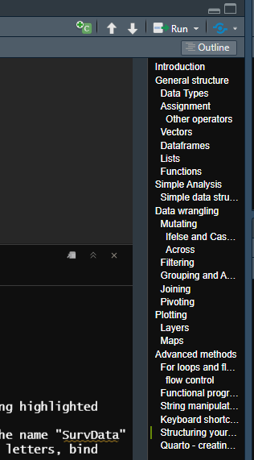
outline
You can then use this table of contents to more easily navigate the structure of your script. Additionally, creating such outlines is good to ensure the previously mentioned requirement of linearity.
When it comes to readability, it is important that you take a couple of key steps to ensure that your code is light on the eyes and the code viewer. Remember to have proper spacing between elements of your code, below are a couple of examples of good and bad practice when it comes to writing code with spacing. Note that you should also actively use linespacing to create blocks or separate code from each other.
df_example2<-df_example%>%filter(happy==FALSE) ## BADdf_example_2 <- df_example %>%filter(happy ==FALSE) ## Good## Note the spacing between opeerators, but not between parenthesis and text. df_example2 <- df_example %>%filter(happy ==FALSE,age ==27) ## BADdf_example_2 <- df_example %>%filter(happy ==FALSE, age ==27) ## GOOD## Note that spacing after the commas, just like normal writing, is good practice
Additionally, your code should not be too wide. Perhaps you have noticed a strange grey line running down your script editor. This is the recommended width by posit, the company who makes RStudio. while it is generally fine to break this line once or twice, it should serve as a guide to how wide your script should be, to ensure that it is easy to follow. Linebreaks are automatically spaced in a nice way when you use them inside functions between arguments, as is evident from some of the code demonstrated here. Below is also an example of really bad and embarassing code from my MA thesis.
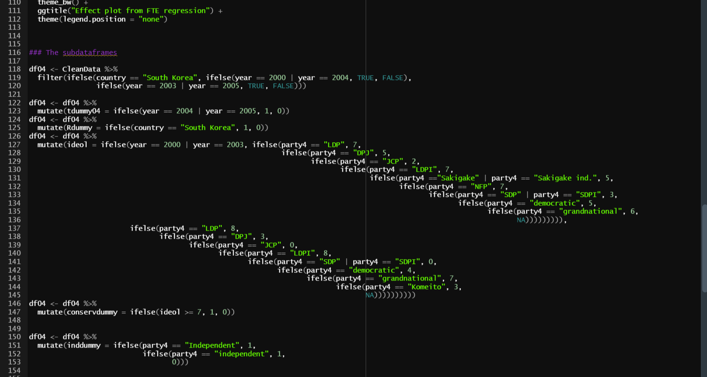
really bad stuff
Note the absolute hell that is trying to find out if you have enough parentheses at the end of your mutate function.
Finally, it is good practice to comment your code regularly. A # will turn everything on the line that follows it into a comment. Make sure that you provide the reader with some context as to how you are proceeding.
7.6 Quarto - creating nice documents in RStudio with code
The document you are currently reading is made through the quarto framework, which is developed in RStudio. This framework allows for seamless creation of pdf, html, and other types of files, from your RStudio IDE. The outline files for these documents end in .qmd, and you can create a new one from the top corner of your IDE.
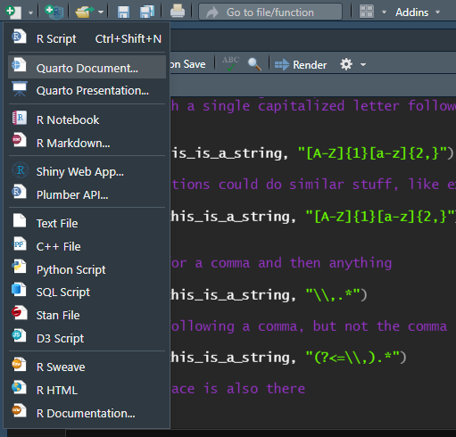
here
When clicking new quarto document, you will arrive at a prompt to create one of several types of documents, the current one is an html document, but through quarto you can also create latex specified documents (I have a friend who wrote their Master thesis in RStudio, you can also use bibref through it). Quarto can also make presentations through beamer, revealjs and other engines for making presentations (even powerpoint can be made through RStudio). Following the creation of the file, you specify several settings in the YAML header, which is at the top, here you can specify settings that affect the entire document, and the way it is rendered. The YAML header for this document for instance looks like this:
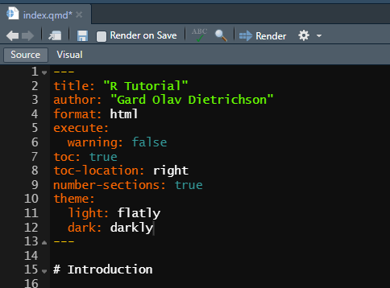
yaml
In the above instance, the document is turned into an html file, which is the type of file which web browsers display, hence why this tutorial is viewable like this in a webpage. Note also that the output html has several subcategories that you can use to edit settings for the document output you want. You can change the output specification into a different type of document, to change what it is knitted into. Do however make sure that the code you are entering is not unique to the filetype you are applying. If you want a LateX style document you specify output: pdf, this requires a LateX implementation, and the TinyTex package to be on your computer (no overleaf here). If you want a word document, you can specify output: docx in the header, and you can make further specifications by indenting it in new lines, such as in the example below, where a reference document which has settings for font types and sizes, is included in addition to the normal output.
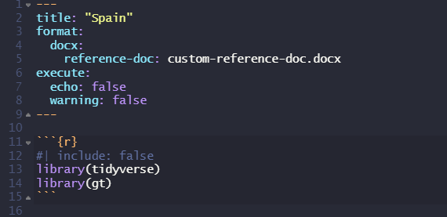
example yaml
Every type of output from Quarto has its own unique variations, that you can explore if you choose to go further with them. Here are some helpful pages for each of the main types of outputs. In addition to the normal outputs, you can also create presentations through beamer (a LateX implementation) and revealjs through Quarto.
Quarto has dedicated display for certain elements if you so desire. You might have noticed that throughout this document, some coding terms appear in in special coding font, this is done in text by wrapping the text in the ` marker. This is not the only unique wrapper characteristic of Quarto, for font specification we have * for cursive, and ** for bold. But more importantly, the $ sign can be used in text to implement formula type of typesetting. So that you can naturally interweave model language in your writing.
Ex: “Model 1 specifies the dependent variable \(y_i\) as dependent on variables \(D_i\) and \(T_i\)”
Additionally, wrapping lines withing two $ makes it into a chunk for longer model specifications. Exemplified below by a generaic DiD model.
\[
y_i = \beta_1 D_i + \beta_2 T_i + \beta_3 D_i T_i + \epsilon_i
\] This code was made within the $$ environment, using the following line of text: y_i = \beta_1 D_i + \beta_2 T_i + \beta_3 D_i T_i + \epsilon_i. This follows generally standard LateX notation rules for mathematical formula.
8 Recommended packages and ecosystems to explore!
Packages dedicated to certain subfields of statistical analysis, or other useful programming techniques, will usually have rather extensive user manuals when you google them. These manuals will often have very useful vignettes giving you examples of how to practically use the function, and what type of data it is suited to, so the main task for you is to get the dataframe into an appropriate form for the package. If any of these packages interest you, google them such as “lme4 r package” and read some of the documentation.
rstan and its attached packages (see Stan’s homepage) is a useful tool for Bayesian statistical analysis, if that stuff interests you. The brms package implements a very useful hierarchical modelling tool utilizing this Stan, which has certain computational advantages over other packages.
For statistical packages, lme4 allows for hierarchical modelling with random effects using Maximum likelihood estimations. plm is a natural extension of glm and lm functions that focus on panel-data estimations. zoo, xts and fts are commonly used for time-series analysis. survreg has survival analysis using maximum likelihood estimations. betareg provides a maximum likelihood implementation for beta regressions (my fav). For causal inference, rdrobust is the most used for regression discontinuity and provides good estimation functions and plotting functions, ivreg for instrumental variable estimation (although both of these methods are rather simple to implement manually in R if you know the math, I have some scripts for it if you are interested). Additionally, the package margineffects (it might actually be margins) is often used in survey experiments to estimate marginal effects, it also has many plot functions for visualizing such effects. HMM provides hidden markov model estimations, extended by mHMMbayes which creates hierarchical HMM’s using Bayesian estimations.
For machine learning procedures, stm is considered a good package to use for structural topic modelling, or LDA estimations. To apply this, one would need to be familiar with text-as-data processing procedures, which are part of the packages tidytext, SnowballC, and quanteda, which might require you to have Python as a backend. For supervised machine learning methods, randomForest provides implementation of the algorithm sometimes known as arbitrary woodland. gbm provides gradient boosting algorithms. For more advanced transformer models however, you will probably need to learn Python.
Text harvesting such as webscraping is an entire entity of itself, maybe I can add a separate document set to this webpage in the future about it. But the relevant packages used for it, and API services are rvest for scraping, httr2 for GET and similar HTTP requests, and jsonlite for transforming retrieved JSON files.
Network analysis tools are mostly provided through the igraph package, which is mostly for quantitative analysis of network data. Ego network analysis can be extended from igraph through the egor package. Visualizations of networks however, I feel is simpler using ggraph given that it integrates well with ggplot syntax, so you can utilize familiar methods and functions from that family of packages.
For visualization and reporting of regression outputs, the “industry-standard” so to speak is stargazer. This package provides a single function, named stargazer which has one of the longest help files in existence. But it creates txt, html, or LateX tables for outputs from regressions. It normally only accepts lm and glm functions, but can be extended through certain methods from the broom and broom.mixed packages, which can transform objects that do not have a stargazer method into objects that do, for easier integration. Outside of stargazer, modelsummary provides a flexible solution for table creation, while accepting more types of objects than stargazer. huxreg is also an option when creating quarto documents with regression outputs, it works similar to stargazer. Additionally, ggplot has many functions for visualizing model estimations such as qplot, but many effects estimations visualizations are better created by manually creating dataframes of expected effects with confidence intervals.
plotly provides interactive plot elements and animated plot functions for documents meant for websites or similar, there are a lot of interesting elements one can use there, that can be integrated with both quarto documents, or as stand-alone apps in shiny.